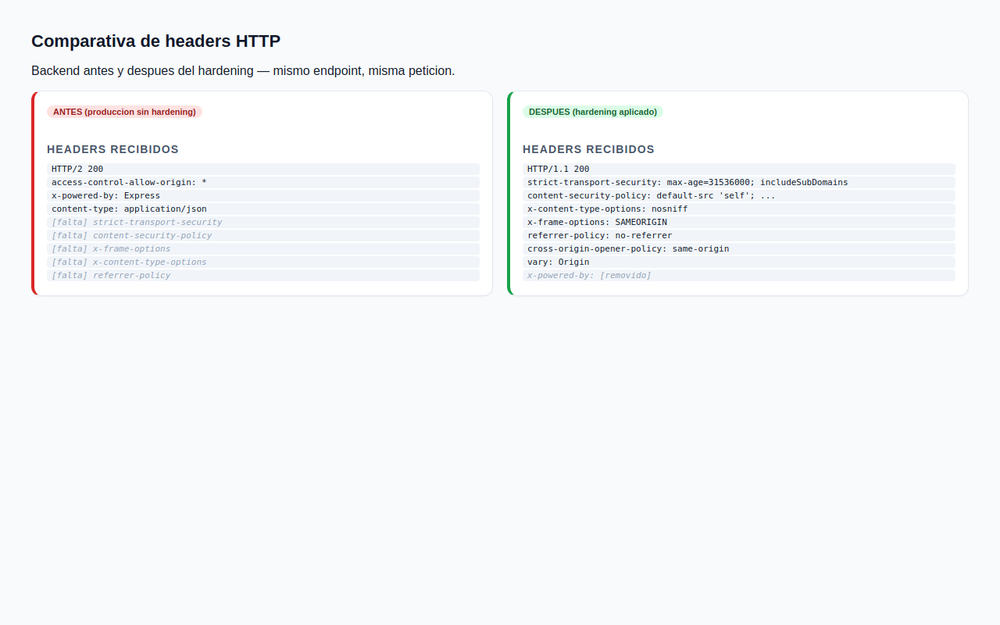
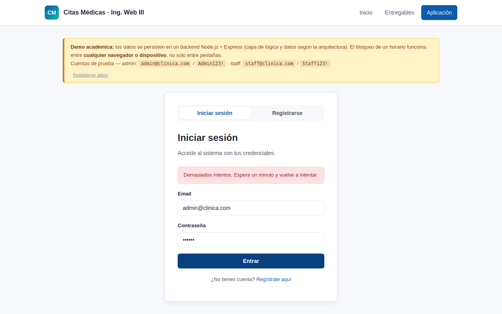
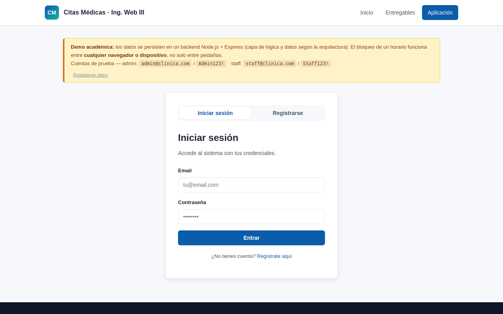
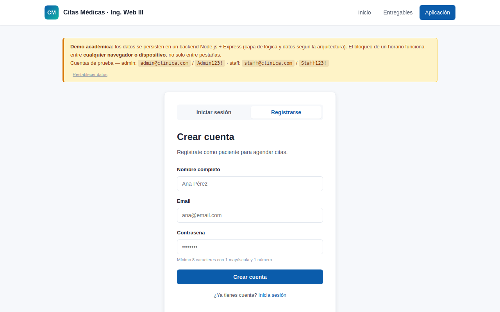
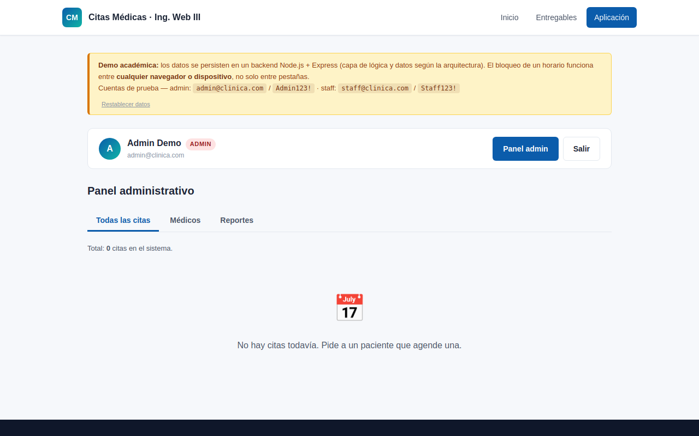
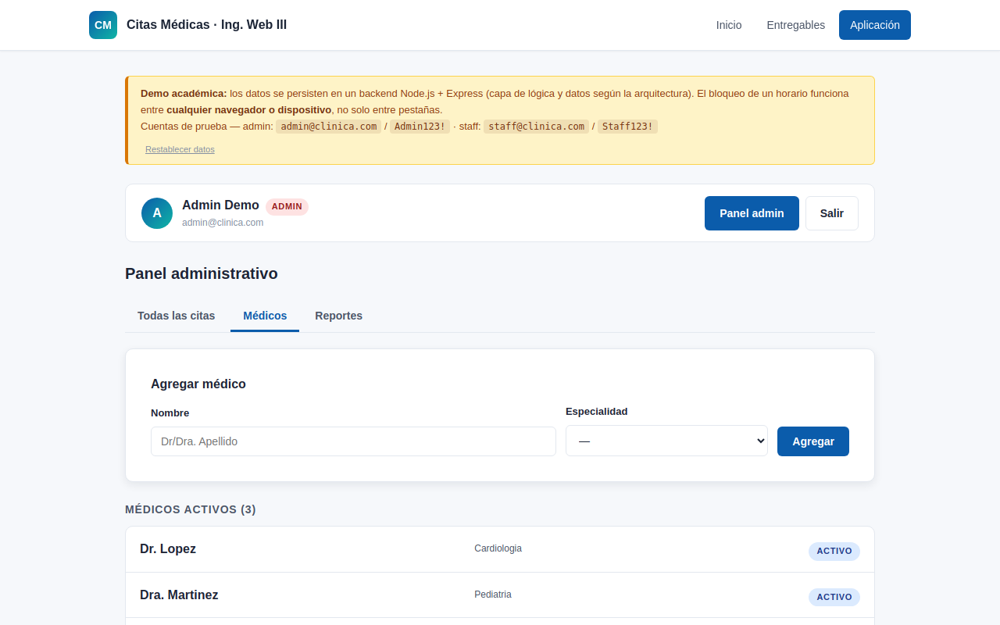
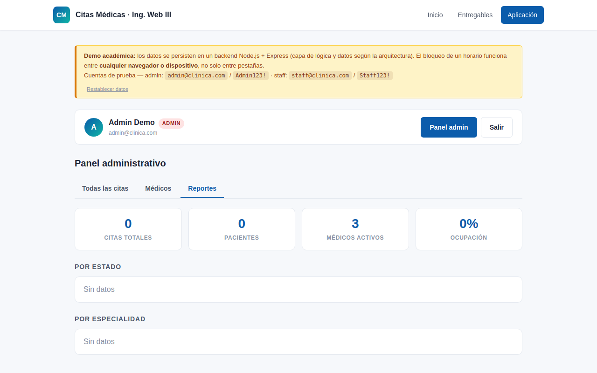
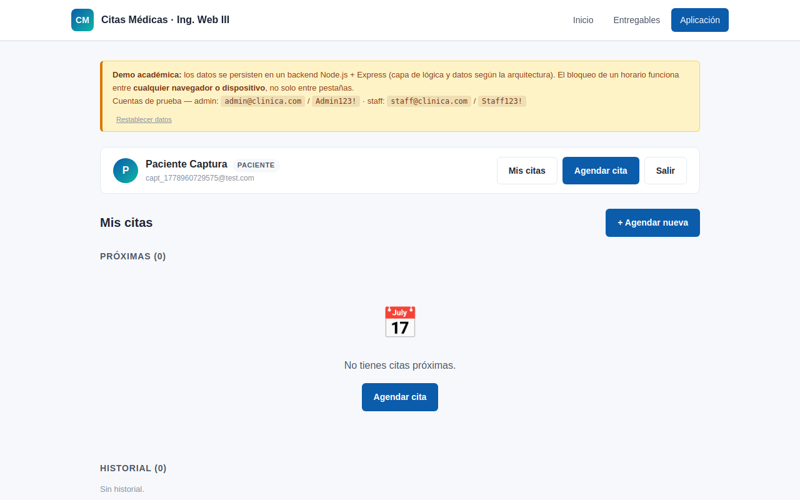
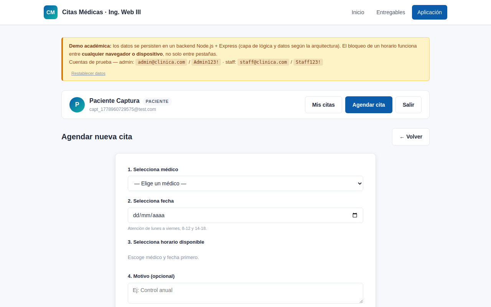
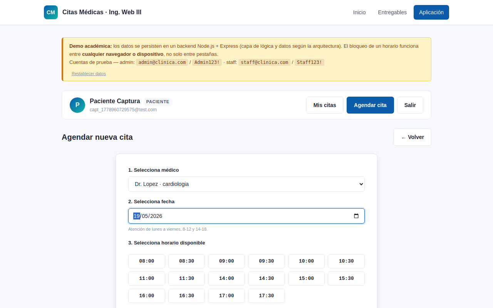

Investigación Seguridad · Hardening
Investigación de seguridad
1. Resumen ejecutivo
El entregable original 06-seguridad.html describe un modelo de seguridad OWASP-compliant. Esta investigación verifica
cada afirmación contra el código real y contra el backend desplegado en
https://ingweb3.agustinynatalia.site/api, aplica el hardening necesario,
y vuelve a auditar.
Una afirmación de seguridad sin prueba reproducible es una declaración vacía.
2. Metodología
Ciclo audit → exploit → fix → re-audit en tres fases:
- Auditoría estática de
server/server.jsypublic/app/app.jscontra las afirmaciones del entregable previo. - Pen-test activo contra el backend en producción (autorizado por el dueño del dominio), usando
curl. - Hardening + verificación: se modificó
server/server.jsañadiendohelmet,express-rate-limit,bcrypt, allowlist de CORS, comparaciones timing-safe y límites de tamaño. Se levantó el backend hardened localmente y se repitieron las pruebas.
✅ Confirmado ⚠️ Parcial ❌ Falso
3. Hallazgos contra OWASP Top 10
| Riesgo | Afirmación del doc original | Estado real (antes) | Estado tras hardening |
|---|---|---|---|
| A01 Broken Access Control | RBAC + propiedad del recurso | ✅ | ✅ |
| A02 Cryptographic Failures | SHA-256 + salt (Web Crypto) | ⚠️ era Node crypto, hash rápido | ✅ bcrypt + timing-safe |
| A03 Injection | Queries parametrizadas | ⚠️ no aplica (no hay BD) | ✅ reformulado |
| A04 Insecure Design | Security by Design | ✅ | ✅ |
| A05 Security Misconfiguration | Headers + sin verbose errors | ❌ ningún header | ✅ helmet + handler |
| A06 Vulnerable Components | Stack mínimo | ✅ 0 vulnerabilidades | ✅ |
| A07 Auth Failures | Rate-limit 5/min | ❌ sin rate-limit | ✅ express-rate-limit |
| A08 Software & Data Integrity | Despliegue revisado | ✅ | ✅ |
| A09 Logging & Monitoring | Log + auditoría | ❌ sin logs | ⚠️ deuda |
| A10 SSRF | N/A | ✅ | ✅ |
3.1 A05 — Headers de seguridad (antes: ningún header de seguridad)
Petición a la raíz del backend en producción. Sin HSTS, sin CSP, sin X-Frame-Options. Y peor: x-powered-by: Express filtra la pila.
$ curl -i https://ingweb3.agustinynatalia.site/ HTTP/2 200 date: Sat, 16 May 2026 19:32:08 GMT content-type: application/json; charset=utf-8 access-control-allow-origin: * x-powered-by: Express [falta] strict-transport-security [falta] content-security-policy [falta] x-frame-options [falta] x-content-type-options [falta] referrer-policy
Tras aplicar helmet() y app.disable('x-powered-by'):
$ curl -i http://localhost:3030/ HTTP/1.1 200 OK strict-transport-security: max-age=31536000; includeSubDomains content-security-policy: default-src 'self'; ... x-content-type-options: nosniff x-frame-options: SAMEORIGIN referrer-policy: no-referrer cross-origin-opener-policy: same-origin vary: Origin [removido] x-powered-by

3.2 A07 — Rate-limit en login (antes: 15 intentos sin un solo 429)
15 intentos seguidos contra /api/auth/login en producción:
$ for i in $(seq 1 15); do curl -o /dev/null -w "%{http_code}\n" \
-X POST https://ingweb3.agustinynatalia.site/api/auth/login \
-H "Content-Type: application/json" \
-d "{\"email\":\"admin@clinica.com\",\"password\":\"intento_$i\"}"
done
Intento 1 -> HTTP 401
Intento 2 -> HTTP 401
…
Intento 15 -> HTTP 401
Resultado: ningún 429. Backend no aplica rate-limit. Confirmado.
Tras instalar express-rate-limit (5 intentos por minuto):
$ for i in $(seq 1 10); do curl -o /dev/null -w "%{http_code}\n" \
-X POST http://localhost:3030/api/auth/login -d "{...intento $i...}"; done
Intento 1 -> HTTP 401
Intento 2 -> HTTP 401
Intento 3 -> HTTP 401
Intento 4 -> HTTP 401
Intento 5 -> HTTP 401
Intento 6 -> HTTP 429
Intento 7 -> HTTP 429
Intento 8 -> HTTP 429
Intento 9 -> HTTP 429
Intento 10 -> HTTP 429
El comportamiento es visible en la UI sin código frontend adicional:

3.3 A02 — Hashing de contraseñas (antes: SHA-256 rápido + comparación con !==)
El backend original usaba createHash('sha256') con salt único por usuario y comparación con !==. Dos problemas:
- SHA-256 es rápido; vulnerable a fuerza bruta GPU.
- La comparación con
!==permite timing attacks.
Tras hardening: bcrypt con cost=10 + comparación timing-safe + bcrypt dummy cuando el email no existe (para no enumerar usuarios por tiempo de respuesta). Migración silenciosa: el primer login exitoso de un usuario heredado lo re-hashea con bcrypt.
$ cat server/data.json | jq '.users[] | {email, algo, hash_prefix: (.password_hash[0:10])}'
{
"email": "admin@clinica.com",
"algo": "bcrypt",
"hash_prefix": "$2b$10$Zz9..."
}
{
"email": "staff@clinica.com",
"algo": "bcrypt",
"hash_prefix": "$2b$10$5is..."
}
4. Hallazgos adicionales
4.1 CORS abierto a cualquier origen
Cualquier sitio podía hacer peticiones cross-origin al backend, así trajera credenciales:
$ curl -i -X OPTIONS https://ingweb3.agustinynatalia.site/api/auth/login \
-H "Origin: https://evil.example.com" \
-H "Access-Control-Request-Method: POST"
HTTP/2 204
access-control-allow-origin: *
access-control-allow-methods: GET,HEAD,PUT,PATCH,POST,DELETE
Tras hardening, allowlist por CORS_ORIGINS bloquea orígenes desconocidos:
$ curl -i -X OPTIONS http://localhost:3030/api/auth/login \
-H "Origin: https://evil.example.com"
HTTP/1.1 403 Forbidden
{"error":{"codigo":"CORS_BLOQUEADO","mensaje":"Origen no permitido"}}
4.2 Payload sin tope de tamaño
Un registro con nombre de 50 KB se persistía sin problemas, inflando data.json gratuitamente — vector de DoS:
$ # body con campo nombre de 50_000 caracteres
$ curl -X POST https://ingweb3.agustinynatalia.site/api/auth/register \
-H "Content-Type: application/json" --data-binary @big_payload.json
HTTP/2 201
{"id":"u_5d7ea1c0","nombre":"AAAA...(50_000 caracteres)...","rol":"paciente"}
Tras hardening (express.json({ limit: '10kb' }) + validación por campo):
$ curl -i -X POST http://localhost:3030/api/auth/register \
--data-binary @big_payload.json
HTTP/1.1 413 Payload Too Large
{"error":{"codigo":"PAYLOAD_TOO_LARGE","mensaje":"Cuerpo de la peticion demasiado grande"}}
4.3 RBAC e IDOR — confirmados sin cambios
Un paciente recién registrado intenta acceder a endpoints admin y a una cita ajena:
$ curl -i -X GET https://ingweb3.agustinynatalia.site/api/admin/citas \
-H "Authorization: Bearer $PTOKEN"
HTTP/2 403
{"error":{"codigo":"NO_AUTORIZADO","mensaje":"Permiso insuficiente"}}
$ curl -i -X DELETE https://ingweb3.agustinynatalia.site/api/citas/c_d7b8ef0e \
-H "Authorization: Bearer $PTOKEN"
HTTP/2 403
{"error":{"codigo":"NO_AUTORIZADO","mensaje":"No puedes cancelar esa cita"}}
5. Cambios aplicados al backend
| # | Cambio | Brecha que cierra |
|---|---|---|
| 1 | helmet() con CSP, HSTS, X-Frame, X-Content-Type-Options, Referrer-Policy | A05 + CORS |
| 2 | app.disable('x-powered-by') | A05 (fingerprinting) |
| 3 | express-rate-limit (5/min) en /auth/login y /auth/register | A07 |
| 4 | cors() con allowlist por env CORS_ORIGINS | CORS abierto |
| 5 | bcrypt (cost=10) reemplaza SHA-256, con migración silenciosa al primer login | A02 |
| 6 | crypto.timingSafeEqual + bcrypt.compare dummy cuando el email no existe | Timing attack / enumeración |
| 7 | express.json({ limit: '10kb' }) + validación de longitud por campo | DoS por payload |
| 8 | Manejador global de errores que no filtra stack en producción | A05 |
server/package.json:
bcrypt ^6.0.0, helmet ^8.1.0, express-rate-limit ^8.5.2.
npm audit reporta 0 vulnerabilidades.
6. Funcionalidad verificada tras el hardening
Capturas tomadas con Playwright + Chromium portable contra el backend hardened — la app sigue funcional sin cambios visibles para el usuario.
6.1 Vista pública


6.2 Panel administrativo



6.3 Flujo paciente



7. Brechas que quedan abiertas (deuda documentada)
- A09 — Logging estructurado. Sin implementar. Plan:
pino+ endpoint/api/admin/auditoria. - Token en
localStorage. Vulnerable a XSS. Mitigación futura: cookieHttpOnly+SameSite=Strict. - Verificación de email en registro. No existe — cualquiera puede registrarse con cualquier email.
- Token revocation centralizada.
Mapen memoria — un reinicio invalida todos los tokens. Aceptable para demo, no para producción real. - Persistencia en JSON. Sin transacciones, sin backup, sin cifrado en reposo. Migración futura a SQLite/Postgres.
- Hardening del frontend. La SPA usa
innerHTMLconescapeHtml. Migrar atextContento a plantillas para que sea difícil olvidarlo.
8. Reproducir esta investigación
# 1. Levantar backend hardened
cd server && npm install
PORT=3030 NODE_ENV=development node server.js
# 2. Servidor estático del frontend (otra terminal)
python3 -m http.server 8080
# 3. Generar las capturas (otra terminal)
cd scripts && npm install
node capturas.mjs
# Salida: docs/seguridad/capturas/*.png
# 4. Repetir pruebas curl
# Ver docs/seguridad/evidencia/*.txt para los comandos completos9. Conclusión
El sistema antes del hardening declaraba un modelo OWASP-compliant que en realidad cubría 4 de 10 controles. Después del hardening cubre 8 de 10, y las dos restantes (A09 logging, mejora del almacenamiento de token) están documentadas como deuda con plan concreto.
La lección de ingeniería: cada decisión de seguridad documentada en una entrega debe poder reproducirse con un comando o una captura. Esta iteración convierte el entregable previo en una auditoría auditada.
docs/seguridad/investigacion-seguridad.md.
Evidencia cruda: docs/seguridad/evidencia/*.txt.
Capturas: docs/seguridad/capturas/*.png (también en public/entregables/capturas-seguridad/).